<title>Tampere Design Brand Sheets</title>
<meta name="claude:viewport-fit-sides" content="cover">
<link rel="preconnect" href="https://fonts.googleapis.com">
<link rel="preconnect" href="https://fonts.gstatic.com" crossorigin>
<link rel="stylesheet" href="https://fonts.googleapis.com/css2?family=Averia+Serif+Libre:wght@400;700&family=Geist:wght@400;500;600&family=Geist+Mono:wght@500&family=Patrick+Hand&family=Bricolage+Grotesque:opsz,wght@12..96,800&family=Newsreader:opsz,wght@6..72,400&family=Caveat:wght@600&family=Jost:wght@400;500&family=Rethink+Sans:wght@400;500;600&family=Square+Peg&display=swap">
<style>
/* Layout: one sheet per direction behind a tab bar; each sheet is set in its own direction's fonts and colours.
   The shell is a quiet print-like page so the three directions can be compared side by side. */
:root {
  --paper: #ffffff;
  --ink: #1b1b1d;
  --soft: #5b5d63;
  --rule: #e6e6e8;
  --wash: #f5f5f6;
  --f-ui: "Geist", "Helvetica Neue", Arial, sans-serif;
  --f-mono: "Geist Mono", ui-monospace, Menlo, monospace;
  color-scheme: light;
}
* { box-sizing: border-box; }
[hidden] { display: none !important; }
body { margin: 0; background: var(--paper); color: var(--ink); font: 400 16px/1.55 var(--f-ui); -webkit-font-smoothing: antialiased; }
.wrap { max-width: 1120px; margin: 0 auto; padding-left: max(16px, env(safe-area-inset-left, 0px)); padding-right: max(16px, env(safe-area-inset-right, 0px)); }
a { color: inherit; }
:focus-visible { outline: 2px solid #0d99ff; outline-offset: 2px; }

.top { padding-block: 40px 0; display: grid; gap: 8px; }
.top .kick { font: 500 12px/1 var(--f-mono); letter-spacing: .08em; text-transform: uppercase; color: var(--soft); }
.top h1 { margin: 0; font: 600 clamp(1.6rem, 3vw, 2.2rem)/1.15 var(--f-ui); letter-spacing: -.02em; text-wrap: balance; }
.top p { margin: 0; max-width: 62ch; color: var(--soft); }

.tabs { position: sticky; top: env(safe-area-inset-top, 0px); z-index: 5; background: var(--paper); border-bottom: 1px solid var(--rule); margin-top: 24px; }
body::before { content: ""; position: fixed; inset: 0 0 auto; height: env(safe-area-inset-top, 0px); z-index: 10; background: var(--paper); }
.tabs .wrap { display: flex; gap: 4px; overflow-x: auto; }
.tabs button { flex: none; display: grid; gap: 2px; text-align: left; padding: 14px 16px 12px; border: 0; border-bottom: 3px solid transparent; background: none; cursor: pointer; font: inherit; color: var(--soft); }
.tabs button b { font-weight: 600; color: var(--ink); font-size: 16px; }
.tabs button span { font-size: 13px; }
.tabs button[aria-selected="true"] { border-bottom-color: var(--ink); }

.sheet { padding-block: 40px 72px; display: grid; gap: 56px; }
.intro { display: grid; grid-template-columns: minmax(0, 1.3fr) minmax(0, 1fr); gap: 32px 48px; align-items: end; }
.intro h2 { margin: 0; font-size: clamp(2.6rem, 6vw, 4.4rem); line-height: 1; letter-spacing: -.02em; }
.intro .lede { margin: 12px 0 0; font-size: 18px; max-width: 46ch; }
.intro dl { margin: 0; display: grid; gap: 12px; }
.intro dt { font: 500 11px/1 var(--f-mono); letter-spacing: .08em; text-transform: uppercase; color: var(--soft); }
.intro dd { margin: 4px 0 0; font-size: 15px; }
.intro .open { display: inline-block; margin-top: 4px; font-weight: 500; }

.block { display: grid; grid-template-columns: 180px minmax(0, 1fr); gap: 24px 40px; border-top: 1px solid var(--rule); padding-top: 24px; }
.block > h3 { margin: 0; font: 500 12px/1.4 var(--f-mono); letter-spacing: .08em; text-transform: uppercase; color: var(--soft); }
.block > h3 small { display: block; margin-top: 8px; font: 400 14px/1.45 var(--f-ui); letter-spacing: 0; text-transform: none; }
.stack { display: grid; gap: 24px; min-width: 0; }
.label { font: 500 11px/1 var(--f-mono); letter-spacing: .08em; text-transform: uppercase; color: var(--soft); margin: 0 0 10px; }

/* colour */
.chips { display: grid; grid-template-columns: repeat(auto-fill, minmax(150px, 1fr)); gap: 12px; }
.chip { border: 1px solid var(--rule); border-radius: 12px; overflow: hidden; background: var(--paper); }
.chip .sw { height: 92px; display: flex; align-items: flex-end; padding: 10px 12px; font: 600 15px/1 var(--f-ui); }
.chip .meta { padding: 10px 12px 12px; display: grid; gap: 2px; font-size: 13px; color: var(--soft); }
.chip .meta b { color: var(--ink); font: 500 13px/1.3 var(--f-mono); }
.chips.small .chip .sw { height: 56px; }
.note { margin: 0; font-size: 14px; color: var(--soft); max-width: 70ch; }

/* type */
.specimens { display: grid; gap: 12px; }
.spec { display: grid; grid-template-columns: 200px minmax(0, 1fr); gap: 8px 24px; align-items: baseline; padding: 20px; border-radius: 12px; background: var(--wash); }
.spec .who { display: grid; gap: 4px; font-size: 13px; color: var(--soft); }
.spec .who b { font: 600 15px/1.2 var(--f-ui); color: var(--ink); }
.spec .sample { min-width: 0; overflow-wrap: anywhere; }

/* imagery */
.assets { display: grid; grid-template-columns: repeat(auto-fill, minmax(140px, 1fr)); gap: 12px; }
.asset { margin: 0; display: grid; gap: 8px; }
.asset .box { aspect-ratio: 1; max-width: 100%; display: grid; place-items: center; border-radius: 12px; background: var(--wash); padding: 14px; overflow: hidden; }
.asset .box img { display: block; width: 100%; height: 100%; min-height: 0; object-fit: contain; }
.asset .box > svg { display: block; width: 100%; height: 100%; }
.asset figcaption { font-size: 13px; color: var(--soft); }
.rules { margin: 0; padding: 0; list-style: none; display: grid; grid-template-columns: repeat(auto-fit, minmax(240px, 1fr)); gap: 8px 24px; font-size: 15px; }
.rules li { padding-left: 18px; position: relative; }
.rules li::before { content: ""; position: absolute; left: 0; top: .6em; width: 8px; height: 8px; border-radius: 2px; background: var(--dot, var(--ink)); }
.rules.dont li::before { background: none; border: 1.5px solid var(--soft); }

/* photos */
.photos { display: grid; grid-template-columns: repeat(3, minmax(0, 1fr)); gap: 20px; align-items: start; }
.photo { margin: 0; min-width: 0; }
.photo img { display: block; width: 100%; aspect-ratio: 4 / 3; object-fit: cover; }
.photo figcaption { margin-top: 10px; font-size: 13px; color: var(--soft); }
.credit { font-size: 12px; color: var(--soft); }

/* ---------- Canvas sheet ---------- */
#canvas { --dot: #252525; }
#canvas .intro h2, #canvas .h-disp { font-family: "Averia Serif Libre", Georgia, serif; font-weight: 400; }
#canvas .intro { padding: 32px; border-radius: 16px; background-color: #fff; background-image: radial-gradient(circle, #d9d9de 1px, transparent 1.4px); background-size: 22px 22px; border: 1px solid var(--rule); }
.cv-photo { position: relative; padding-top: 24px; }
.cv-photo .fname { position: absolute; top: 0; left: 0; font: 500 12px/1 "Geist", sans-serif; color: #8a8d93; }
.cv-photo img { border-radius: 2px; outline: 1.5px solid #0D99FF; outline-offset: 0; }
.cv-photo .h { position: absolute; width: 9px; height: 9px; background: #fff; border: 1.5px solid #0D99FF; }
.cv-photo .h1 { left: -4px; top: 20px; } .cv-photo .h2 { right: -4px; top: 20px; }
.cv-photo .h3 { left: -4px; bottom: calc(var(--cap, 0px) - 4px); } .cv-photo .h4 { right: -4px; bottom: calc(var(--cap, 0px) - 4px); }
.cv-photo .frame { position: relative; }
.cv-photo .frame .h3, .cv-photo .frame .h4 { bottom: -4px; }
.cv-photo .frame .h1, .cv-photo .frame .h2 { top: -4px; }
.cv-shapes { display: block; width: 100%; height: auto; border-radius: 12px; background: var(--wash); }

/* ---------- Tools sheet ---------- */
#tools { --dot: #1D4FAE; }
#tools .intro h2 { font: 800 clamp(2.6rem, 6vw, 4.4rem)/.95 "Bricolage Grotesque", sans-serif; letter-spacing: -.02em; filter: url(#busted); }
#tools .intro .hl { position: relative; z-index: 0; }
#tools .intro .hl::before { content: ""; position: absolute; z-index: -1; left: -.1em; right: -.1em; top: .45em; bottom: -.02em; background: #FB8B14; opacity: .75; border-radius: 3px 8px 4px 9px; transform: rotate(-1deg); }
.tl-photo { position: relative; }
.tl-photo .win { position: relative; padding: 10px; }
.tl-photo .win img { filter: saturate(.9); }
.tl-photo .win svg { position: absolute; inset: 0; width: 100%; height: 100%; overflow: visible; pointer-events: none; }
.tl-photo figcaption { font-family: "Caveat", cursive; font-weight: 600; font-size: 20px; color: #1D4FAE; }

/* ---------- Bricks sheet ---------- */
#bricks { --dot: #E43CF7; }
#bricks .intro h2 { font-family: "Futura", "Futura PT", "Jost", sans-serif; font-weight: 400; color: #3A3A3A; }
#bricks .intro, #bricks .stack, #bricks .note { font-family: "Rethink Sans", sans-serif; }
#bricks .pixels { display: grid; grid-template-columns: repeat(16, 1fr); gap: 2px; max-width: 320px; }
#bricks .pixels i { aspect-ratio: 1; background: var(--c, transparent); }
.bk-photo { margin: 0; background: #fff; padding: 12px 12px 48px; box-shadow: 0 10px 24px rgba(20,20,20,.14), 0 1px 2px rgba(20,20,20,.08); transform: rotate(var(--r, -2deg)); position: relative; }
.bk-photo img { aspect-ratio: 1; }
.bk-photo figcaption { position: absolute; left: 16px; right: 16px; bottom: 12px; margin: 0; font: 400 28px/1 "Square Peg", cursive; color: #141414; }

@media (max-width: 820px) {
  .intro, .block, .spec { grid-template-columns: minmax(0, 1fr); }
  .photos { grid-template-columns: minmax(0, 1fr); max-width: 440px; }
  .sheet { gap: 40px; }
}
@media (prefers-reduced-motion: reduce) { * { transition: none !important; } }
</style>

<svg width="0" height="0" style="position:absolute" aria-hidden="true"><filter id="busted"><feTurbulence type="fractalNoise" baseFrequency=".035" numOctaves="2" seed="11" result="n"/><feDisplacementMap in="SourceGraphic" in2="n" scale="4"/></filter><filter id="pencil"><feTurbulence type="fractalNoise" baseFrequency=".04" numOctaves="2" seed="3"/><feDisplacementMap in="SourceGraphic" scale="2.2"/></filter></svg>

<header class="wrap top">
  <span class="kick">Tampere Design · landing page directions · October 2026</span>
  <h1>Three brand directions, one sheet each</h1>
  <p>Each sheet sets out the colour palette, type, imagery and photo style behind one landing page. The photos are free stock placeholders from Pexels. Replace them with our own event photos before launch.</p>
</header>

<nav class="tabs" aria-label="Directions">
  <div class="wrap" role="tablist">
    <button type="button" role="tab" id="tab-canvas" aria-controls="canvas" aria-selected="true"><b>Canvas</b><span>A shared design file</span></button>
    <button type="button" role="tab" id="tab-tools" aria-controls="tools" aria-selected="false"><b>Tools</b><span>Drawn by hand</span></button>
    <button type="button" role="tab" id="tab-bricks" aria-controls="bricks" aria-selected="false"><b>Bricks</b><span>Every pixel is one of us</span></button>
  </div>
</nav>

<!-- ======================= CANVAS ======================= -->
<main>
<section class="wrap sheet" id="canvas" role="tabpanel" aria-labelledby="tab-canvas">
  <div class="intro">
    <div>
      <h2>Canvas</h2>
      <p class="lede">The landing page is a shared Figma or FigJam file. Visitors drop into a canvas where the organisers are already working. Stickers, sticky notes and live cursors make it feel like a room full of designers.</p>
    </div>
    <dl>
      <div><dt>Feels like</dt><dd>Friendly, playful, made by people who live in design tools</dd></div>
      <div><dt>Signature moves</dt><dd>Selection boxes, red spacing measurements, a peer cursor that says hi, sticky notes, die-cut stickers</dd></div>
      <div><dt>Landing page</dt><dd><a class="open" href="https://claude.ai/artifact/E62oxv5A78BsbgHC24FbdV" target="_blank" rel="noopener">Open Canvas ↗</a></dd></div>
    </dl>
  </div>

  <div class="block">
    <h3>Colour<small>Bright sticky-note colours, always used together. None of them has a fixed job.</small></h3>
    <div class="stack">
      <div>
        <p class="label">Decorative set</p>
        <div class="chips">
          <div class="chip"><div class="sw" style="background:#FEE400;color:#4E4604">Aa</div><div class="meta"><b>#FEE400</b>Yellow · text #4E4604 (7.4:1)</div></div>
          <div class="chip"><div class="sw" style="background:#FEBAFF;color:#611862">Aa</div><div class="meta"><b>#FEBAFF</b>Pink · text #611862 (7.5:1)</div></div>
          <div class="chip"><div class="sw" style="background:#00DCEF;color:#04484E">Aa</div><div class="meta"><b>#00DCEF</b>Cyan · text #04484E (6.1:1)</div></div>
          <div class="chip"><div class="sw" style="background:#AAE578;color:#264E04">Aa</div><div class="meta"><b>#AAE578</b>Green · text #264E04 (6.5:1)</div></div>
          <div class="chip"><div class="sw" style="background:#FF7BEA;color:#252525">Aa</div><div class="meta"><b>#FF7BEA</b>Bold pink · shapes and graphics</div></div>
        </div>
      </div>
      <div>
        <p class="label">Neutrals</p>
        <div class="chips small">
          <div class="chip"><div class="sw" style="background:#252525;color:#fff">Aa</div><div class="meta"><b>#252525</b>Ink and buttons · 15.3:1</div></div>
          <div class="chip"><div class="sw" style="background:#64676E;color:#fff">Aa</div><div class="meta"><b>#64676E</b>Organiser grey · 5.7:1</div></div>
          <div class="chip"><div class="sw" style="background:#E4E5FD;color:#252525">Aa</div><div class="meta"><b>#E4E5FD</b>Date lilac · 12.4:1</div></div>
          <div class="chip"><div class="sw" style="background-color:#fff;background-image:radial-gradient(circle,#d9d9de 1px,transparent 1.4px);background-size:14px 14px;color:#252525">Aa</div><div class="meta"><b>#FFFFFF</b>Canvas with dot grid</div></div>
        </div>
      </div>
      <div>
        <p class="label">Design-tool marks</p>
        <div class="chips small">
          <div class="chip"><div class="sw" style="background:#F24822;color:#fff"></div><div class="meta"><b>#F24822</b>Spacing redlines · labels #D2340F</div></div>
          <div class="chip"><div class="sw" style="background:#0D99FF;color:#fff"></div><div class="meta"><b>#0D99FF</b>Selection · text #0A6FC2</div></div>
          <div class="chip"><div class="sw" style="background:#9747FF;color:#fff"></div><div class="meta"><b>#9747FF</b>Component outline</div></div>
        </div>
      </div>
      <p class="note">The design-tool marks follow Figma's own conventions, so they are only used for what they mean in Figma: measuring, selecting and marking components.</p>
    </div>
  </div>

  <div class="block">
    <h3>Type<small>A soft, slightly hand-made serif against a clean interface sans.</small></h3>
    <div class="specimens">
      <div class="spec"><div class="who"><b>Averia Serif Libre</b>Headings · 400, 700</div><div class="sample h-disp" style="font-size:clamp(2rem,4.4vw,3.2rem);line-height:1.05">Hi, designers of Tampere!</div></div>
      <div class="spec"><div class="who"><b>Geist</b>Body and interface · 400–600</div><div class="sample" style="font-family:Geist,sans-serif;font-size:17px">Glad you found us. We host meetups, critiques and good company for anyone who designs anything.</div></div>
      <div class="spec"><div class="who"><b>Patrick Hand</b>Notes and cursor labels</div><div class="sample" style="font-family:'Patrick Hand',cursive;font-size:24px">any designers are welcome</div></div>
    </div>
  </div>

  <div class="block">
    <h3>Imagery<small>Things you would find stuck on a FigJam board or a laptop lid.</small></h3>
    <div class="stack">
      <div class="assets">
        <figure class="asset"><div class="box">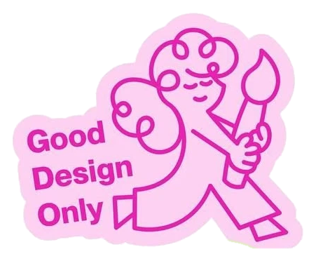</div><figcaption>Die-cut stickers</figcaption></figure>
        <figure class="asset"><div class="box"></div><figcaption>Slogan stickers</figcaption></figure>
        <figure class="asset"><div class="box">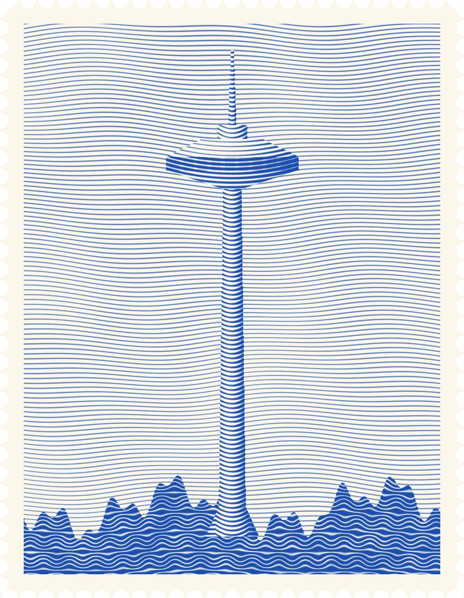</div><figcaption>Näsinneula stamp</figcaption></figure>
        <figure class="asset"><div class="box" style="padding:0;background:#fff;border:1px solid var(--rule)"><svg viewBox="0 0 160 160" width="100%" height="100%" aria-hidden="true"><rect x="30" y="34" width="80" height="80" fill="#FEE400" transform="rotate(-3 70 74)"/><rect x="58" y="56" width="80" height="80" fill="#00DCEF" transform="rotate(2 98 96)"/><path d="M76 84h44M76 96h34" stroke="#04484E" stroke-width="3" stroke-linecap="round"/></svg></div><figcaption>Sticky notes</figcaption></figure>
      </div>
      <svg class="cv-shapes" viewBox="0 36 1200 184" role="img" aria-label="Footer shapes: rounded hexagon, scalloped cookie, circle, clover, rounded square, flower and rounded triangle in yellow, cyan, green and pink"><g id="cv-shapes-g"></g></svg>
      <ul class="rules">
        <li>Soft, rounded geometric shapes that overlap, like objects on a canvas</li>
        <li>Selection handles and redlines appear on real content, never as decoration alone</li>
        <li>At most two stickers per screen, so they stay a treat</li>
        <li>Flat colour with no gradients. Light shadows only on things you can pick up</li>
      </ul>
    </div>
  </div>

  <div class="block">
    <h3>Photo style<small>Bright, colourful, busy rooms. Photos sit on the canvas as selected frames.</small></h3>
    <div class="stack">
      <div class="photos">
        <figure class="photo cv-photo"><span class="fname"># Crit club</span><div class="frame">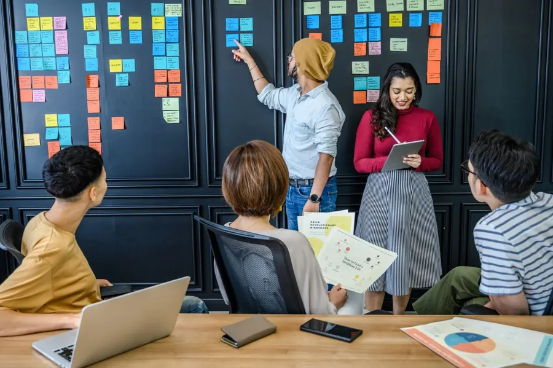<i class="h h1"></i><i class="h h2"></i><i class="h h3"></i><i class="h h4"></i></div></figure>
        <figure class="photo cv-photo"><span class="fname"># Workshop</span><div class="frame">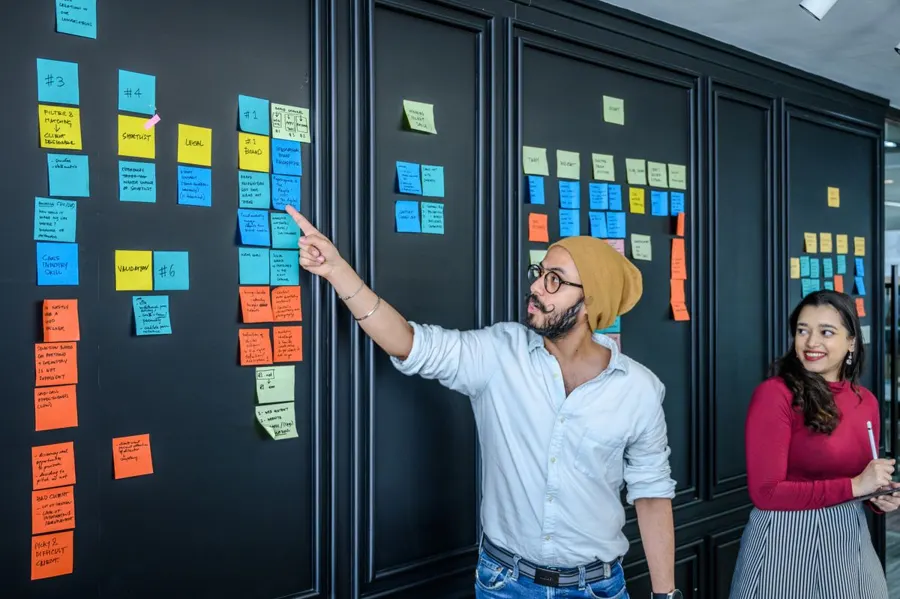</div></figure>
        <figure class="photo cv-photo"><span class="fname"># Show and tell</span><div class="frame">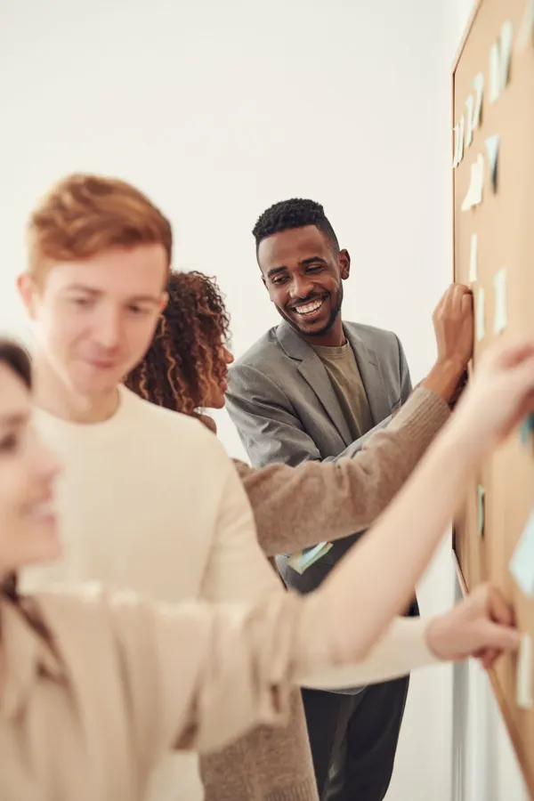</div></figure>
      </div>
      <ul class="rules">
        <li>Walls of sticky notes, screens, sketches: the work is in the frame</li>
        <li>Natural, even light with true, saturated colour</li>
        <li>Frame names like "# Crit club" caption the photo, Figma style</li>
        <li>One photo per set can carry the blue selection box</li>
      </ul>
    </div>
  </div>
</section>

<!-- ======================= TOOLS ======================= -->
<section class="wrap sheet" id="tools" role="tabpanel" aria-labelledby="tab-tools" hidden>
  <div class="intro">
    <div>
      <h2>Many ways to design. <span class="hl">One community.</span></h2>
      <p class="lede">Real design tools, photographed and cut out, sit on a white desk. A blue pen line draws itself as you scroll. Everything else looks drawn in pencil, so the page feels made by hand.</p>
    </div>
    <dl>
      <div><dt>Feels like</dt><dd>Hands-on, crafty, a little rough at the edges, confident</dd></div>
      <div><dt>Signature moves</dt><dd>Roughened bold titles, a scroll-drawn blue pen line, orange highlighter, a scribble footer that keeps redrawing itself</dd></div>
      <div><dt>Landing page</dt><dd><a class="open" href="https://claude.ai/artifact/Yaq2FcR2CNvXXjyHNzQuPE" target="_blank" rel="noopener">Open Tools ↗</a></dd></div>
    </dl>
  </div>

  <div class="block">
    <h3>Colour<small>Mostly black and white. Colour comes from the tools: pen ink, highlighter and paper.</small></h3>
    <div class="stack">
      <div>
        <p class="label">Decorative set</p>
        <div class="chips">
          <div class="chip"><div class="sw" style="background:#1D4FAE;color:#fff">Aa</div><div class="meta"><b>#1D4FAE</b>Pen blue · 7.5:1 with white</div></div>
          <div class="chip"><div class="sw" style="background:#FB8B14;color:#141414">Aa</div><div class="meta"><b>#FB8B14</b>Highlighter orange · 7.7:1</div></div>
          <div class="chip"><div class="sw" style="background:#FFD60A;color:#141414">Aa</div><div class="meta"><b>#FFD60A</b>Bright yellow · 13:1</div></div>
        </div>
      </div>
      <div>
        <p class="label">Neutrals</p>
        <div class="chips small">
          <div class="chip"><div class="sw" style="background:#141414;color:#fff">Aa</div><div class="meta"><b>#141414</b>Ink and buttons · 18.4:1</div></div>
          <div class="chip"><div class="sw" style="background:#55585E;color:#fff">Aa</div><div class="meta"><b>#55585E</b>Soft text · 7.1:1</div></div>
          <div class="chip"><div class="sw" style="background-color:#fff;background-image:radial-gradient(circle,#d4d4d8 1px,transparent 1.4px);background-size:14px 14px;color:#141414">Aa</div><div class="meta"><b>#FFFFFF</b>Paper, plain or dotted</div></div>
        </div>
      </div>
      <p class="note">Blue is pen ink and stays on lines and handwriting. Orange is the highlighter behind key words. The footer band is yellow. All text on these colours is black or white at well over 4.5:1.</p>
    </div>
  </div>

  <div class="block">
    <h3>Type<small>A loud bold grotesque, roughened like a worn stamp, calmed by a quiet serif and sans.</small></h3>
    <div class="specimens">
      <div class="spec"><div class="who"><b>Bricolage Grotesque</b>Titles · 800, roughened edges</div><div class="sample" style="font:800 clamp(2rem,4.4vw,3.2rem)/1 'Bricolage Grotesque',sans-serif;letter-spacing:-.02em;filter:url(#busted)">Hi, Tampere Designers</div></div>
      <div class="spec"><div class="who"><b>Newsreader</b>Section headings · 400</div><div class="sample" style="font:400 clamp(1.7rem,3.2vw,2.4rem)/1.1 Newsreader,Georgia,serif">Ways to join in</div></div>
      <div class="spec"><div class="who"><b>Geist</b>Body and interface · 400–600</div><div class="sample" style="font-family:Geist,sans-serif;font-size:17px">Three short talks, an open show-and-tell and plenty of time to chat.</div></div>
      <div class="spec"><div class="who"><b>Caveat</b>Pen handwriting · 600, in pen blue</div><div class="sample" style="font:600 30px/1 Caveat,cursive;color:#1D4FAE">designers</div></div>
    </div>
  </div>

  <div class="block">
    <h3>Imagery<small>Real objects, cut out cleanly. Lines drawn by hand around them.</small></h3>
    <div class="stack">
      <div class="assets">
        <figure class="asset"><div class="box">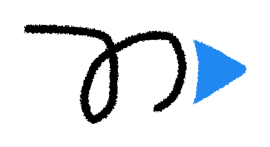</div><figcaption>Scribble logo</figcaption></figure>
        <figure class="asset"><div class="box">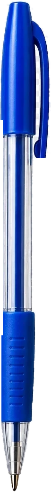</div><figcaption>Blue pen</figcaption></figure>
        <figure class="asset"><div class="box">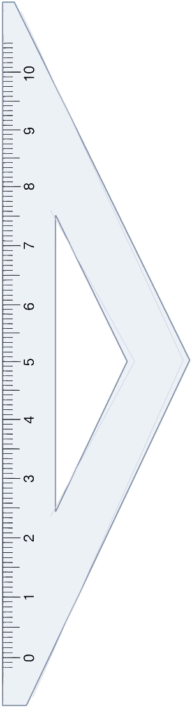</div><figcaption>Set square</figcaption></figure>
        <figure class="asset"><div class="box">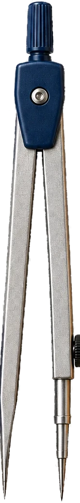</div><figcaption>Compass</figcaption></figure>
        <figure class="asset"><div class="box">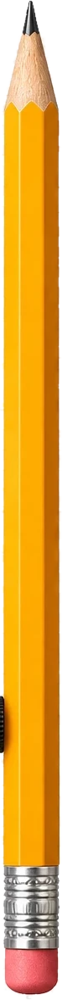</div><figcaption>Pencil</figcaption></figure>
      </div>
      <ul class="rules">
        <li>Photograph real tools and cut them out. Don't redraw them</li>
        <li>Rules, frames and icons wobble slightly, like pencil</li>
        <li>The blue line connects things and ends on a key message</li>
        <li>Black scribbles over solid letters for big brand moments</li>
      </ul>
    </div>
  </div>

  <div class="block">
    <h3>Photo style<small>Close to the work: hands, paper and tools, seen from desk height.</small></h3>
    <div class="stack">
      <div class="photos">
        <figure class="photo tl-photo"><div class="win">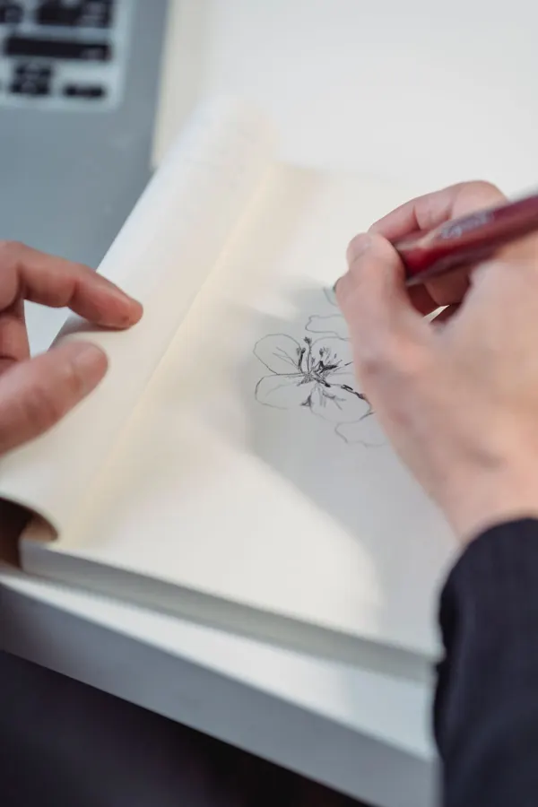<svg viewBox="0 0 100 75" preserveAspectRatio="none" aria-hidden="true"><path d="M2 3 Q50 1 98 3 Q99 38 97 73 Q50 75 3 72 Q1 38 2 3Z" fill="none" stroke="#141414" stroke-width=".8" vector-effect="non-scaling-stroke" filter="url(#pencil)"/></svg></div><figcaption>sketch club</figcaption></figure>
        <figure class="photo tl-photo"><div class="win">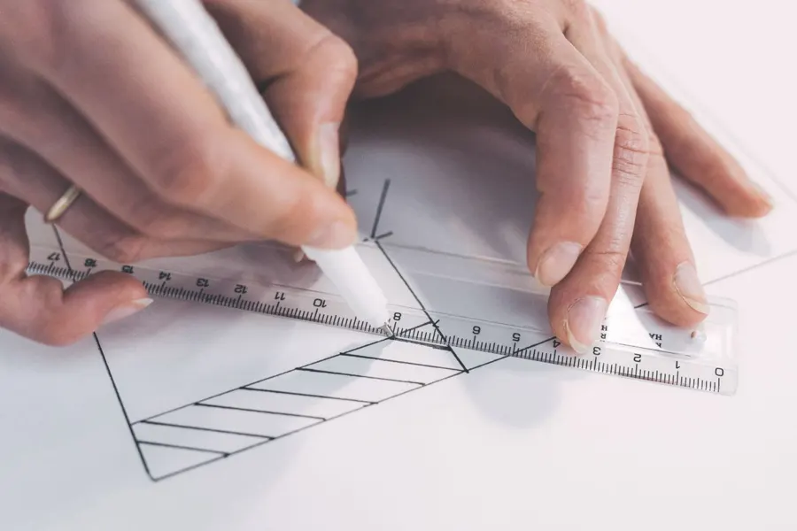<svg viewBox="0 0 100 75" preserveAspectRatio="none" aria-hidden="true"><path d="M3 2 Q50 4 97 2 Q98 38 98 73 Q50 72 2 74 Q3 38 3 2Z" fill="none" stroke="#141414" stroke-width=".8" vector-effect="non-scaling-stroke" filter="url(#pencil)"/></svg></div><figcaption>workshop</figcaption></figure>
        <figure class="photo tl-photo"><div class="win">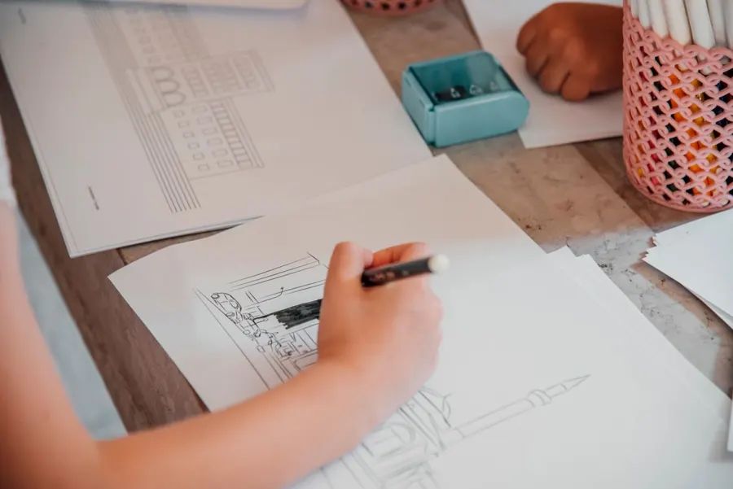<svg viewBox="0 0 100 75" preserveAspectRatio="none" aria-hidden="true"><path d="M2 2 Q50 3 98 1 Q97 38 98 74 Q50 73 2 73 Q2 38 2 2Z" fill="none" stroke="#141414" stroke-width=".8" vector-effect="non-scaling-stroke" filter="url(#pencil)"/></svg></div><figcaption>open studio</figcaption></figure>
      </div>
      <ul class="rules">
        <li>Hands mid-task: sketching, cutting, pinning, pointing at a print</li>
        <li>Soft daylight from a window, with real shadows on the desk</li>
        <li>Light, slightly muted colour so the pen blue and orange stay the brightest things</li>
        <li>Frame photos with a pencil-drawn border and a handwritten caption</li>
      </ul>
    </div>
  </div>
</section>

<!-- ======================= BRICKS ======================= -->
<section class="wrap sheet" id="bricks" role="tabpanel" aria-labelledby="tab-bricks" hidden>
  <div class="intro">
    <div>
      <h2>Designers of Tampere</h2>
      <p class="lede">The community is built pixel by pixel. Small coloured squares gather into the page, a staircase of pixels leads you down, and the next event arrives as a ticket with a pixel calendar.</p>
    </div>
    <dl>
      <div><dt>Feels like</dt><dd>Clean, upbeat, digital with a human wink</dd></div>
      <div><dt>Signature moves</dt><dd>Pixel trails, "Add your pixel", a ticket with real cut-out notches, polaroids with handwritten captions</dd></div>
      <div><dt>Landing page</dt><dd><a class="open" href="https://claude.ai/artifact/FhXsXpJoC8STMGjxaj1cMT" target="_blank" rel="noopener">Open Bricks ↗</a></dd></div>
    </dl>
  </div>

  <div class="block">
    <h3>Colour<small>Four bright pixel colours, used together. Titles in a soft dark grey.</small></h3>
    <div class="stack">
      <div>
        <p class="label">Pixel set</p>
        <div class="chips">
          <div class="chip"><div class="sw" style="background:#4386E9;color:#141414">Aa</div><div class="meta"><b>#4386E9</b>Blue · 5.1:1 with ink</div></div>
          <div class="chip"><div class="sw" style="background:#E43CF7;color:#141414">Aa</div><div class="meta"><b>#E43CF7</b>Pink · 5.5:1 with ink</div></div>
          <div class="chip"><div class="sw" style="background:#9BFCB5;color:#141414">Aa</div><div class="meta"><b>#9BFCB5</b>Mint · 14.9:1</div></div>
          <div class="chip"><div class="sw" style="background:#FCEF51;color:#141414">Aa</div><div class="meta"><b>#FCEF51</b>Yellow · 15.4:1</div></div>
        </div>
      </div>
      <div>
        <p class="label">Neutrals</p>
        <div class="chips small">
          <div class="chip"><div class="sw" style="background:#3A3A3A;color:#fff">Aa</div><div class="meta"><b>#3A3A3A</b>Titles · 11.4:1</div></div>
          <div class="chip"><div class="sw" style="background:#141414;color:#fff">Aa</div><div class="meta"><b>#141414</b>Text and buttons · 18.4:1</div></div>
          <div class="chip"><div class="sw" style="background:#55585E;color:#fff">Aa</div><div class="meta"><b>#55585E</b>Soft text · 7.1:1</div></div>
          <div class="chip"><div class="sw" style="background:#fff;color:#141414">Aa</div><div class="meta"><b>#FFFFFF</b>Plain white ground</div></div>
        </div>
      </div>
      <div>
        <p class="label">In use</p>
        <div class="pixels" id="bk-pixels" aria-hidden="true"></div>
      </div>
      <p class="note">Blue and pink need dark text. White text on them falls below 4.5:1 (3.6:1 and 3.3:1), so keep them for pixels, shapes and fills behind ink.</p>
    </div>
  </div>

  <div class="block">
    <h3>Type<small>Geometric titles, a warm modern sans for reading, and a quick marker for notes.</small></h3>
    <div class="specimens">
      <div class="spec"><div class="who"><b>Futura</b>Titles · Jost where Futura isn't installed</div><div class="sample" style="font:400 clamp(2rem,4.4vw,3.2rem)/1.05 Futura,'Futura PT',Jost,sans-serif;color:#3A3A3A">Our next event</div></div>
      <div class="spec"><div class="who"><b>Rethink Sans</b>Body and interface · 400–600</div><div class="sample" style="font-family:'Rethink Sans',sans-serif;font-size:17px">Autumn meetup: show and tell. Thu 19 November, 17:30–20:00.</div></div>
      <div class="spec"><div class="who"><b>Square Peg</b>Handwriting · captions and asides</div><div class="sample" style="font:400 36px/1 'Square Peg',cursive">Hi, we are</div></div>
      <div class="spec"><div class="who"><b>Geist Mono</b>Ticket and calendar details</div><div class="sample" style="font:500 14px/1.4 'Geist Mono',monospace;letter-spacing:.08em">NOVEMBER 2026 · M T W T F S S</div></div>
    </div>
  </div>

  <div class="block">
    <h3>Imagery<small>Square pixels on a 12px grid, a ticket, and polaroids.</small></h3>
    <div class="stack">
      <div class="assets">
        <figure class="asset"><div class="box"></div><figcaption>Pixel arrow logo</figcaption></figure>
        <figure class="asset"><div class="box" style="background:#fff;border:1px solid var(--rule)"><svg viewBox="0 0 120 80" width="100%" aria-hidden="true"><path d="M8 4H38A6 6 0 0 0 50 4H112V76H50A6 6 0 0 0 38 76H8Z" fill="#fff" stroke="#141414" stroke-width="1.5"/><path d="M44 12V70" stroke="#141414" stroke-width="1.2" stroke-dasharray="3 3"/><g fill="#eee"><rect x="14" y="28" width="5" height="5"/><rect x="21" y="28" width="5" height="5"/><rect x="28" y="28" width="5" height="5"/><rect x="14" y="35" width="5" height="5"/><rect x="21" y="35" width="5" height="5"/><rect x="14" y="42" width="5" height="5"/></g><rect x="28" y="35" width="5" height="5" fill="#E43CF7"/><rect x="56" y="30" width="40" height="5" fill="#141414"/><rect x="56" y="42" width="30" height="3" fill="#9a9a9a"/></svg></div><figcaption>Event ticket</figcaption></figure>
        <figure class="asset"><div class="box" style="background:#fff;border:1px solid var(--rule)"><svg viewBox="0 0 120 120" width="100%" aria-hidden="true"><g id="bk-trail"></g></svg></div><figcaption>Pixel trails</figcaption></figure>
      </div>
      <ul class="rules">
        <li>Pixels are perfect squares on a 12px grid, never rounded</li>
        <li>Mix all four colours in every cluster, so none of them leads</li>
        <li>Pixels gather around content and thin out towards the edges</li>
        <li>Notches and perforations are real cut-outs, not drawn on</li>
      </ul>
    </div>
  </div>

  <div class="block">
    <h3>Photo style<small>Warm, candid social moments, printed as polaroids.</small></h3>
    <div class="stack">
      <div class="photos">
        <figure class="photo bk-photo" style="--r:-2.5deg"><figcaption>meetup night</figcaption></figure>
        <figure class="photo bk-photo" style="--r:1.5deg">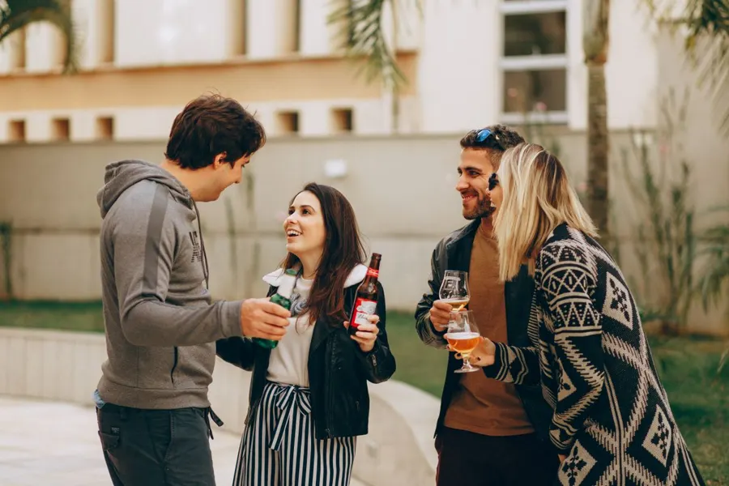<figcaption>after the talks</figcaption></figure>
        <figure class="photo bk-photo" style="--r:-1deg"><figcaption>coffee crit</figcaption></figure>
      </div>
      <ul class="rules">
        <li>People first: faces, laughter, conversations in progress</li>
        <li>Warm light, a little flash is fine. It should feel like a night out</li>
        <li>Square crops in a white polaroid border, tilted 1–3°</li>
        <li>A short handwritten caption, lowercase, like a fridge photo</li>
      </ul>
    </div>
  </div>
</section>

<section class="wrap" style="padding-block:0 56px">
  <div class="block">
    <h3>All photos<small>Shared rules for every direction</small></h3>
    <div class="stack">
      <ul class="rules">
        <li>Real people at real Tampere Design events, shot candidly while something is happening</li>
        <li>Mixed groups and mixed disciplines: UX, graphic, industrial, students</li>
        <li>Ask before posting, and give people an easy way to opt out of photos</li>
      </ul>
      <ul class="rules dont">
        <li>Avoid staged stock poses: handshakes, pointing at laptops, matching outfits</li>
        <li>Avoid heavy filters, heavy vignettes and black-and-white for whole sets</li>
        <li>Avoid crowds shot from the back of a dark hall</li>
      </ul>
      <p class="credit">Placeholder photos from <a href="https://www.pexels.com/" target="_blank" rel="noopener">Pexels</a>, free to use under the Pexels licence: <a href="https://www.pexels.com/photo/4623463/" target="_blank" rel="noopener">4623463</a>, <a href="https://www.pexels.com/photo/4623462/" target="_blank" rel="noopener">4623462</a>, <a href="https://www.pexels.com/photo/3184297/" target="_blank" rel="noopener">3184297</a>, <a href="https://www.pexels.com/photo/7858840/" target="_blank" rel="noopener">7858840</a>, <a href="https://www.pexels.com/photo/9052534/" target="_blank" rel="noopener">9052534</a>, <a href="https://www.pexels.com/photo/15018975/" target="_blank" rel="noopener">15018975</a>, <a href="https://www.pexels.com/photo/3182824/" target="_blank" rel="noopener">3182824</a>, <a href="https://www.pexels.com/photo/3922816/" target="_blank" rel="noopener">3922816</a>, <a href="https://www.pexels.com/photo/4427958/" target="_blank" rel="noopener">4427958</a>.</p>
    </div>
  </div>
</section>
</main>

<script>
(() => {
  // tabs, with the open sheet kept in the link (#canvas, #tools, #bricks)
  const ids = ["canvas", "tools", "bricks"];
  const show = (id) => {
    if (!ids.includes(id)) id = "canvas";
    ids.forEach((k) => {
      document.getElementById(k).hidden = k !== id;
      document.getElementById("tab-" + k).setAttribute("aria-selected", String(k === id));
    });
  };
  document.querySelectorAll('[role="tab"]').forEach((b) => b.addEventListener("click", () => {
    const id = b.getAttribute("aria-controls");
    show(id);
    if (location.hash !== "#" + id) history.replaceState(null, "", "#" + id);
  }));
  addEventListener("hashchange", () => show(location.hash.slice(1)));
  show(location.hash.slice(1));

  // Canvas footer shapes, the same construction as the landing page
  const blob = (cx, cy, R, f, rot = 0, n = 144) => {
    let d = "";
    for (let i = 0; i < n; i++) {
      const t = 2 * Math.PI * i / n, r = R * f(t), a = t + rot * Math.PI / 180;
      d += (i ? "L" : "M") + (cx + r * Math.cos(a)).toFixed(1) + " " + (cy + r * Math.sin(a)).toFixed(1);
    }
    return d + "Z";
  };
  const rpoly = (cx, cy, R, n, rc, rot = 0) => {
    const V = [...Array(n)].map((_, k) => { const a = rot * Math.PI / 180 + 2 * Math.PI * k / n; return [cx + R * Math.cos(a), cy + R * Math.sin(a)]; });
    const d = rc / Math.tan(Math.PI * (n - 2) / n / 2), seg = V.map((P, k) => {
      const A = V[(k - 1 + n) % n], B = V[(k + 1) % n];
      const la = Math.hypot(A[0] - P[0], A[1] - P[1]), lb = Math.hypot(B[0] - P[0], B[1] - P[1]);
      return [[P[0] + (A[0] - P[0]) / la * d, P[1] + (A[1] - P[1]) / la * d], [P[0] + (B[0] - P[0]) / lb * d, P[1] + (B[1] - P[1]) / lb * d]];
    });
    let s = `M${seg[0][1][0].toFixed(1)} ${seg[0][1][1].toFixed(1)}`;
    for (let k = 1; k <= n; k++) { const [p1, p2] = seg[k % n]; s += ` L${p1[0].toFixed(1)} ${p1[1].toFixed(1)} A${rc} ${rc} 0 0 1 ${p2[0].toFixed(1)} ${p2[1].toFixed(1)}`; }
    return s + "Z";
  };
  const sq = (t) => Math.pow(Math.pow(Math.abs(Math.cos(t)), 4) + Math.pow(Math.abs(Math.sin(t)), 4), -1 / 4);
  const shapes = [
    [rpoly(120, 175, 112, 6, 30), "#FEE400"],
    [blob(290, 172, 92, (t) => 1 + .06 * Math.cos(12 * t)), "#00DCEF"],
    [blob(445, 125, 80, () => 1), "#AAE578"],
    [blob(600, 168, 100, (t) => 1 + .15 * Math.cos(4 * t), 45), "#FF7BEA"],
    [rpoly(765, 182, 108, 4, 34, 59), "#FEE400"],
    [blob(925, 150, 94, (t) => 1 + .09 * Math.cos(8 * t), 10), "#AAE578"],
    [rpoly(1080, 190, 118, 3, 40, -90), "#00DCEF"],
  ];
  document.getElementById("cv-shapes-g").innerHTML = shapes.map(([d, c]) => `<path d="${d}" fill="${c}"/>`).join("");

  // Bricks: a scatter of pixels in all four colours, from a fixed seed so it looks the same each visit
  const COL = ["#4386E9", "#E43CF7", "#FCEF51", "#9BFCB5"];
  let s = 7; const rnd = () => (s = (s * 16807) % 2147483647) / 2147483647;
  const grid = document.getElementById("bk-pixels");
  grid.innerHTML = [...Array(16 * 6)].map((_, i) => {
    const row = Math.floor(i / 16), on = rnd() < .12 + row * .07;
    return `<i style="--c:${on ? COL[Math.floor(rnd() * 4)] : "transparent"}"></i>`;
  }).join("");
  let trail = "", x = 10, y = 100;
  for (let i = 0; i < 26; i++) {
    trail += `<rect x="${x}" y="${y}" width="8" height="8" fill="${COL[i % 4]}"/>`;
    x += 8 * (rnd() < .7 ? 1 : 0); y -= 8 * (rnd() < .45 ? 1 : 0);
    if (x > 104) break; if (y < 8) y = 8;
  }
  document.getElementById("bk-trail").innerHTML = trail;
})();
</script>
